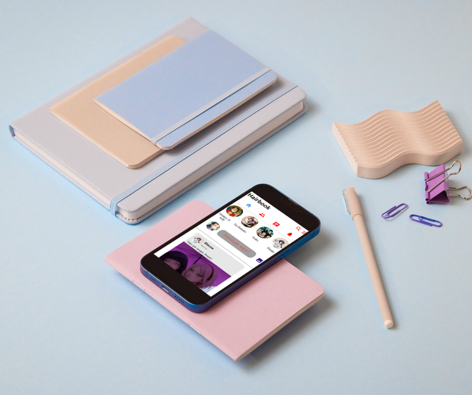
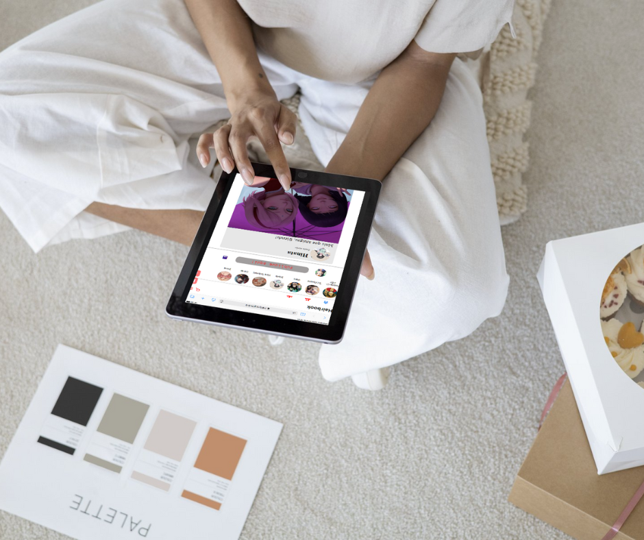
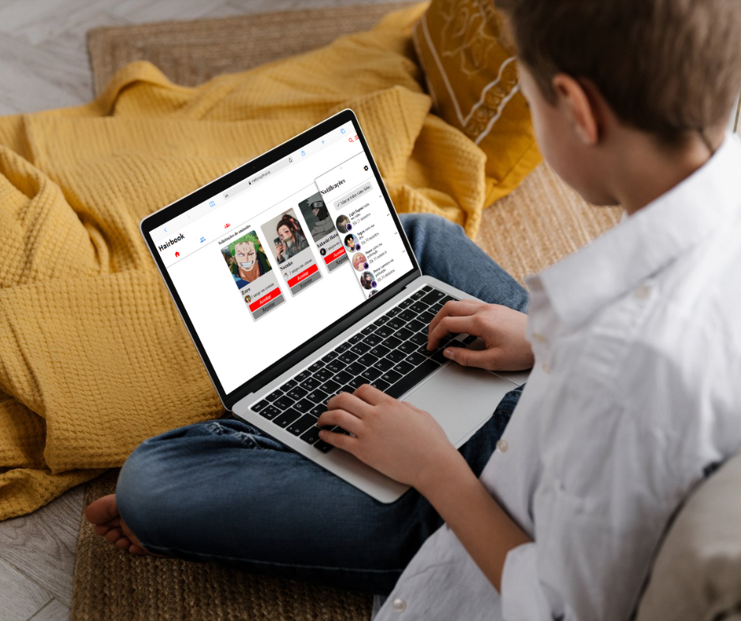
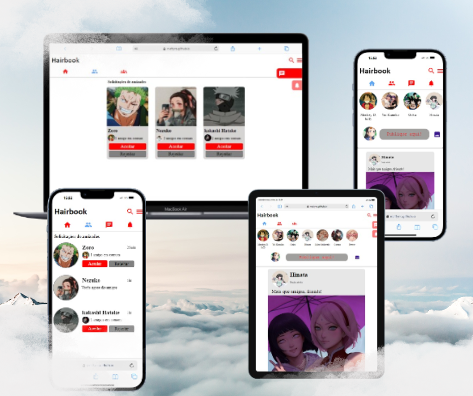
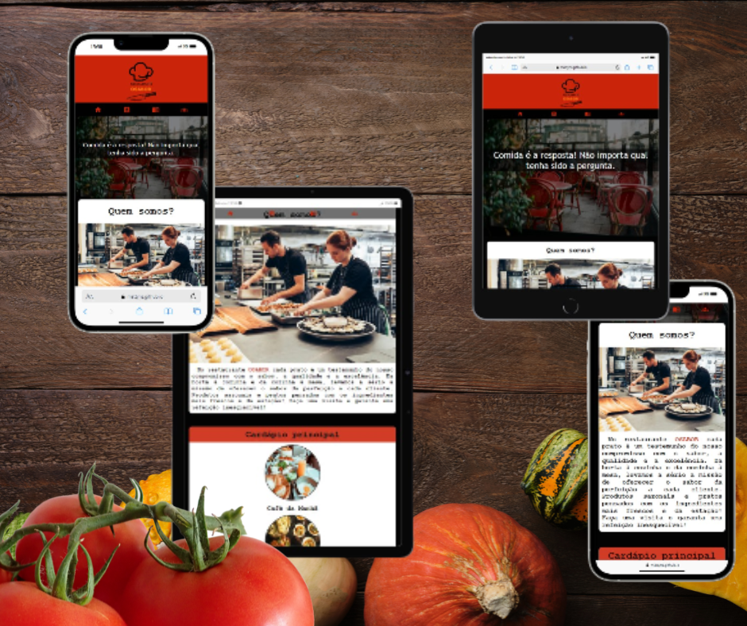
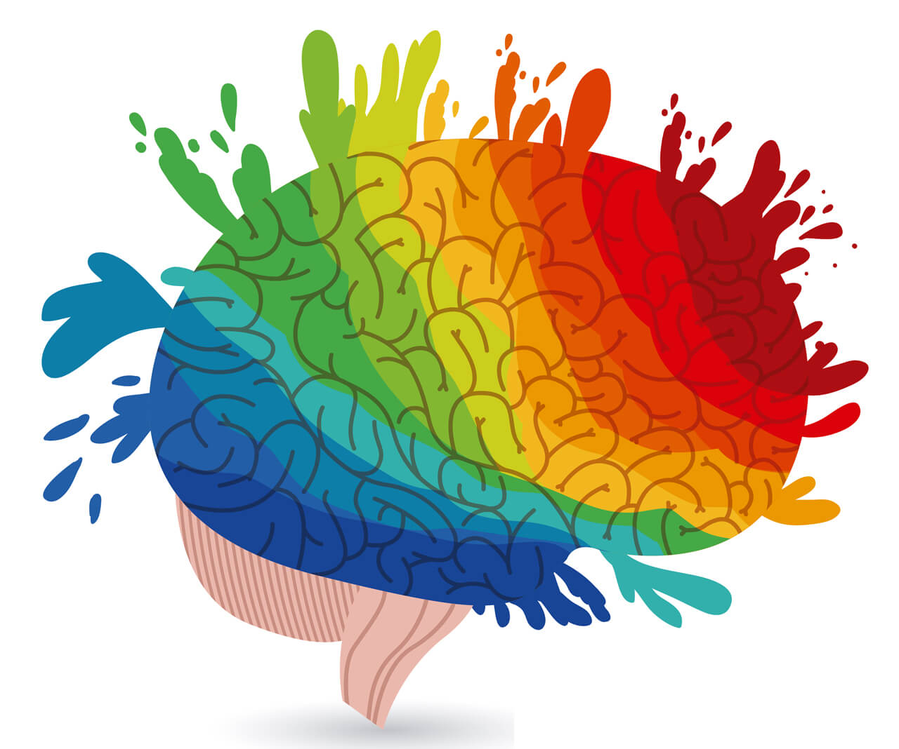

Meus projetos



Projetos responsivos pensados desde o inicio para todos os tamanhos de telas populares. Menus, conteudos, e todos os outros aspectos são adaptáveis aos mais diversos tipos de experiência do usuário.


Designes pensados com base na psicologia das cores e efeitos visuais agradaveis ao público espécifico ou geral, dependendo do objetivo do seu negócio.
